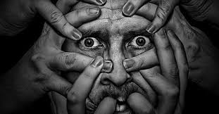

ENFERMEDADES PSICOLOGICAS
una enfermedad mental o psicologica, es cuando se presenta un malestar causado por algun evento ambiental, lo que
puede desencadenar en sensaciones poco placenteras que conllevan a campos emocionales aversivos y anexo de ideas
invasivas, sobre alguna situacion particular, a veces es difícil determinar qué enfermedad mental puede estar
causando los síntomas. Pero tomarse el tiempo y el esfuerzo para obtener un diagnóstico preciso ayudará a determinar
el tratamiento apropiado. segun estudios una enfermedad mental se puede disparar en cualquier momento ya que cuenta
con factores, geneticos (herencia) cuando algun familiar tuvo o paece una enfermedad es predisponente a sufrirla por
algun evento desencadenante y ambientales (eventos) debido a los traumas generados por un momento o accion cometida.
Los síntomas característicos de cada enfermedad mental se detallan en el (Diagnostic and Statistical Manual of
Mental
Disorders) DSM-5, Manual Diagnóstico y Estadístico de Trastornos Mentales, publicado por la American Psychiatric
Association, Asociación Estadounidense de Psiquiatría. Los profesionales de salud mental utilizan este manual para
diagnosticar trastornos mentales.
Las principales clases de enfermedades mentales son las siguientes: (Enfermedades que afectan a todos)
- Trastornos del neurodesarrollo.(afecta la infancia)
- Espectro de la esquizofrenia y otros trastornos psicóticos.(perdida de contacto con la realidad)
- Trastorno bipolar y trastornos relacionados.(episodios de mania)
- Trastornos depresivos.(daño emocional)
- Trastornos de ansiedad.(preocupacion excesiva)
- Trastorno obsesivo compulsivo y trastornos relacionados.(implican preocupacion-obsesion)
- rastornos relacionados con el trauma y el estrés.(falta de adaptacion)
- Trastornos disociativos.(pierden el sentido de si mismo)
- Síntomas somáticos y trastornos relacionados.(sintomas fisicos que causan angustia)
- Trastornos alimenticios.(problema que afectan la nutricion)

Si se padece una enfermedad mental leve con síntomas controlados, el tratamiento brindado por el profesional de
psicologia, puede ser suficiente para la mejora. Sin embargo, en ocasiones, el enfoque del equipo cambiar con el fin
de ser el más adecuado
para brindar la
respuesta a todas las necesidades psiquiátricas, médicas y sociales. Estos equipos son particularmente importantes
para las
enfermedades mentales graves, como la esquizofrenia.